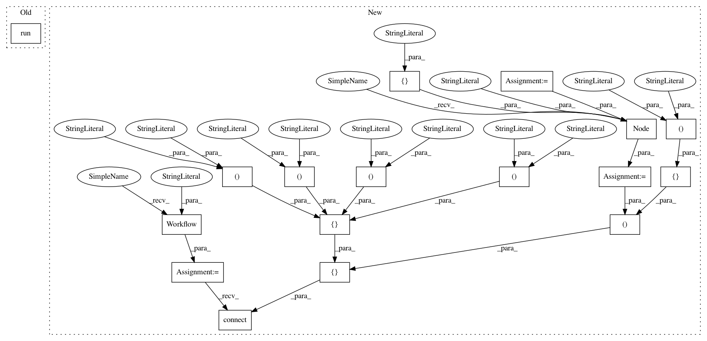

e0c9d018aca7bf05486c385484d5ed1c37bac423,pynets/diffconnectometry.py,,create_mni2diff_transforms,#Any#,13
Before Change
flirt.inputs.in_file = input_MNI
flirt.inputs.out_matrix_file = "%s%s" % (dwi_dir, "/xfms/MNI2diff.mat")
flirt.inputs.out_file = "/tmp/out_flirt.nii.gz"
flirt.run()
// Apply transform between diff and MNI using FLIRT
flirt = pe.Node(interface=fsl.FLIRT(cost_func="mutualinfo"), name="coregister")
flirt.inputs.reference = dwi_infile
After Change
input_MNI = "%s%s" % (FSLDIR, "/data/standard/MNI152_T1_1mm_brain.nii.gz")
out_aff = "%s%s" % (dwi_dir, "/xfms/MNI2diff_affine.nii.gz")
diff_transforms_wf = pe.Workflow(name="diff_transforms")
inputnode = pe.Node(niu.IdentityInterface(fields=["dwi_infile", "input_MNI",
"out_aff", "mat_file"]),
name="inputnode")
inputnode.inputs.dwi_infile = dwi_infile
inputnode.inputs.input_MNI = input_MNI
inputnode.inputs.out_aff = out_aff
inputnode.inputs.mat_file = "%s%s" % (dwi_dir, "/xfms/MNI2diff.mat")
flirt = pe.Node(interface=fsl.FLIRT(cost_func="mutualinfo"), name="coregister")
flirt.inputs.out_file = "/tmp/out_flirt.nii.gz"
flirt_apply = pe.Node(interface=fsl.FLIRT(cost_func="mutualinfo"), name="coregister_apply")
flirt_apply.inputs.out_matrix_file = "/tmp/out_flirt.mat"
flirt_apply.inputs.apply_xfm = True
diff_transforms_wf.connect([
(inputnode, flirt, [("dwi_infile", "reference"),
("input_MNI", "in_file"),
("mat_file", "out_matrix_file")]),
(inputnode, flirt_apply, [("dwi_infile", "reference"), ("input_MNI", "in_file"),
("mat_file", "in_matrix_file"), ("out_aff", "out_file")])
])
return diff_transforms_wf
In pattern: SUPERPATTERN
Frequency: 3
Non-data size: 17
Instances
Project Name: dPys/PyNets
Commit Name: e0c9d018aca7bf05486c385484d5ed1c37bac423
Time: 2018-10-13
Author: dpisner@utexas.edu
File Name: pynets/diffconnectometry.py
Class Name:
Method Name: create_mni2diff_transforms
Project Name: dPys/PyNets
Commit Name: e0c9d018aca7bf05486c385484d5ed1c37bac423
Time: 2018-10-13
Author: dpisner@utexas.edu
File Name: pynets/diffconnectometry.py
Class Name:
Method Name: coreg_WM_mask_to_diff
Project Name: dPys/PyNets
Commit Name: e0c9d018aca7bf05486c385484d5ed1c37bac423
Time: 2018-10-13
Author: dpisner@utexas.edu
File Name: pynets/diffconnectometry.py
Class Name:
Method Name: coreg_mask_to_diff
Project Name: dPys/PyNets
Commit Name: e0c9d018aca7bf05486c385484d5ed1c37bac423
Time: 2018-10-13
Author: dpisner@utexas.edu
File Name: pynets/diffconnectometry.py
Class Name:
Method Name: create_mni2diff_transforms